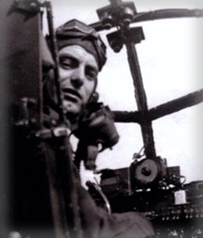

This tribute project is dedicated to the memory of Gordon Baker (1921-1999).
During World War Two, Flight Lieutenant Gordon Baker, DFC was an RAF Lancaster bomber pilot who successfully completed 42 missions and returned home to Kyle, Saskatchewan to raise a family and operate his farm just five miles from the Matador Coop Farm where I grew up.
As a teenager, I spent two summers with Gordon, working in the fields, helping him in the yard, begging him for stories, and learning all I could from this real-life hero.
This project is my effort to capture and share some of Gordon's stories with his family and others to help keep his memory and contributions alive for generations to come.
TZ